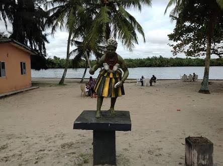
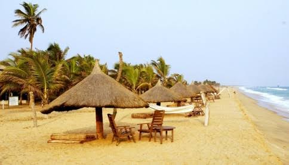
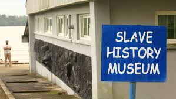
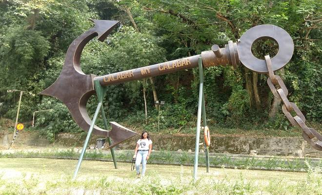

Introduction
Rivers State, located in the Niger Delta region of Nigeria, is one of the country's most important economic hubs. Known for its vast oil reserves, Rivers State is a key player in Nigeria's oil and gas industry. The state capital, Port Harcourt, is a bustling city that serves as the commercial and industrial heart of the state. With its rich culture, history, and natural resources, Rivers State is a fascinating destination for visitors.
Geography and Climate
Rivers State is bordered by Imo, Abia, Anambra, and Bayelsa States, as well as the Atlantic Ocean to the south. The state's terrain is characterized by mangrove swamps, creeks, and rivers, with the Niger Delta forming a significant part of its landscape. The climate is tropical, with a rainy season from March to October and a dry season from November to February. The state's proximity to the coast ensures high humidity levels and moderate temperatures year-round.
Culture and People
Rivers State is home to a diverse population, with over 20 ethnic groups, including the Ikwerre, Ijaw, Ogoni, and Kalabari. The state's cultural heritage is rich and vibrant, with traditional festivals, music, and dance playing a central role in the lives of its people. The Opobo-Nkoro Festival, for example, is a major cultural event that celebrates the history and traditions of the Opobo people. The state is also known for its traditional crafts, including beadwork, pottery, and fishing tools.
Economic Activities
Rivers State's economy is heavily reliant on the oil and gas industry, with the state contributing a significant portion of Nigeria's crude oil production. The state is home to numerous multinational oil companies, as well as a thriving petrochemical industry. In addition to oil and gas, Rivers State is also involved in agriculture, with crops such as cassava, yam, and plantain being widely cultivated. The state government is working to diversify the economy by promoting other sectors such as tourism, agriculture, and manufacturing.
Tourist Attractions
Rivers State offers a variety of tourist attractions, ranging from natural wonders to historical sites. The Bonny Island, located off the coast of Rivers State, is a popular destination for its beautiful beaches and rich history. The Port Harcourt Tourist Beach is another popular spot, offering a relaxing environment along the shores of the Bonny River. For history enthusiasts, the Slave Trade Museum in Bonny provides a glimpse into the state's role in the transatlantic slave trade. Other attractions include the Finima Nature Park, the Isaac Boro Garden Park, and the numerous creeks and rivers that crisscross the state.
Education and Innovation
Rivers State is home to several higher education institutions, including the University of Port Harcourt, Rivers State University, and the Ignatius Ajuru University of Education. These institutions play a crucial role in the state's educational and research development. The state government is also focused on improving primary and secondary education to ensure that all children have access to quality education.
Port Harcourt Tourist Beach
 The Port Harcourt Tourist Beach, situated along the Bonny River in Rivers State, is a popular man-made beach known for its scenic beauty and lively atmosphere. This beach is a favorite destination for both locals and tourists, offering a relaxing environment to unwind, enjoy the cool river breeze, and partake in recreational activities. Visitors can enjoy a variety of water sports, beach games, and cultural performances. The beach also features restaurants and bars serving delicious local dishes and drinks, making it a great spot for socializing and entertainment. The Port Harcourt Tourist Beach provides a perfect blend of relaxation and fun, attracting visitors year-round.
Slave History Museum
 The Slave History Museum in Rivers State is a powerful reminder of Nigeria’s role in the transatlantic slave trade. Located in the old waterfront town of Bonny, this museum preserves the dark history of slavery, offering visitors an opportunity to learn about the horrors endured by enslaved Africans. Through its collection of artifacts, documents, and visual displays, the museum educates visitors on the brutal realities of the slave trade and its impact on the lives of millions. Exhibits include chains, shackles, and other tools used during the slave era, along with historical records that paint a vivid picture of this tragic chapter in human history. The Slave History Museum is a must-visit for anyone interested in understanding Nigeria’s past and the resilience of its people.
Conclusion
Rivers State is a land of opportunities and contrasts, with a rich cultural heritage and vast natural resources. Whether you're interested in exploring its vibrant culture, engaging in business, or simply enjoying its natural beauty, Rivers State offers a unique and rewarding experience for all visitors.